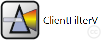
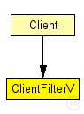
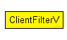

This documentation is released under the Creative Commons license
This documentation is released under the Creative Commons licenseThis program is free software: you can redistribute it and/or modify it under the terms of the GNU Lesser General Public License as published by the Free Software Foundation, either version 3 of the License, or (at your option) any later version.
This program is distributed in the hope that it will be useful, but WITHOUT ANY WARRANTY; without even the implied warranty of MERCHANTABILITY or FITNESS FOR A PARTICULAR PURPOSE. See the GNU Lesser General Public License for more details.
You should have received a copy of the GNU Lesser General Public License along with this program. If not, see http://www.gnu.org/licenses/.
TODO documentation
The following diagram shows usage relationships between types. Unresolved types are missing from the diagram. Click here to see the full picture.
The following diagram shows inheritance relationships for this type. Unresolved types are missing from the diagram. Click here to see the full picture.
| Name | Type | Description |
|---|---|---|
| Client | compound module | (no description) |
| Name | Value | Description |
|---|---|---|
| display | i=block/classifier2 |
| Name | Direction | Size | Description |
|---|---|---|---|
| unpolarizedLight | input | ||
| polarizedLight | output |
This documentation is released under the Creative Commons license